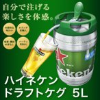

オランダ直輸入 ハイネケン樽生 5リットル ドラフト ケグ ハイネケン ビール サーバー 輸入ビール 代引不可
【商品詳細】 ・冷蔵庫で10時間以上、氷水で2時間以上冷やした後、常温で30分〜１時間程度は飲み頃温度が保てますが、外気温が高い場合は短くなります。小まめに再度冷やして下さい。 ・立てた状態でも、寝かせた状態でも、家庭用冷蔵庫でも十分冷やせるサイズです。 ・飲み残しは注ぎ口のみ外せば、寝かしてもこぼれる事無く冷蔵庫で保管出来、30日間はお召し上がりになれますので、毎日お好きな分を召し上がれます。 ・開封前は消費期限まで常温で保存が可能です。お召し上がり前にお早目に冷蔵庫へ。